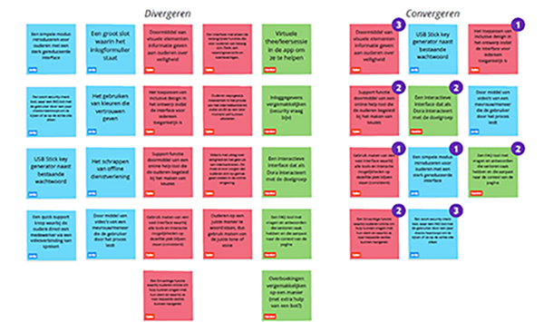

Redesign the User Experience
Commissioned by ING, my teammates Jordy Daamen, Dylan Zonneveld and I focused on devising and designing a personal user interface. Our target group (seniors 60-80 years old) ran into a number of problems. Such as the ongoing digitization that saddles seniors with a disadvantage in the field of digital knowledge.
As a result, a certain group of seniors still avoids online banking. And we wanted to help them by offering them a safe online environment to manage their banking affairs.

Process
This project lasted a total of 4 months and consisted of several courses that connected with this project.
Design challenge: "How can ING help seniors to arrange their online banking in an easy and safe way using a personal interface?"In the first phase, we conducted several interviews, made observations and desk research to map out the wishes and needs of the target group. After mapping all this, we started brainstorming to generate ideas for our solution directions.
As a result of this brainstorming session, we have been busy making prototypes and testing with the target group which they liked the best.Based on the results of the various user tests, we have made choices and several iterations. This eventually brought us to the current concept.
We wanted to make concrete in a clear manner what the foundation is on which our concept is built. Our research showed that these three values are the most important for the target group: convenience, safety and reliability.
Deliverables
- Product Biography
- Design document with our design choices
- Prototype
- Presentation
Final Delivery
For final delivery, we presented our final concept to ING and our coach. Here we showed the bottlenecks, the process, validation and the prototype.
Click here to test the prototype